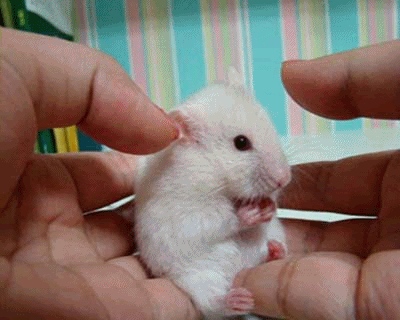
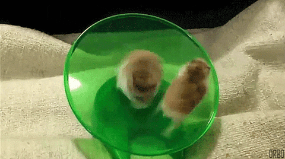
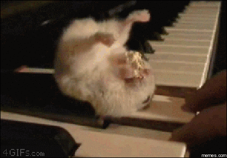

| |
||
|---|---|---|
|  | Sylvia's Hamster Page |  |
 |
Liebe Hamsterfreunde, ich heiße euch willkommen auf meiner Seite und lade euch ein mit mir die Freuden an der Welt der Hamster zu teilen. Diese gutmütigen und majestätischen Wesen werden viel zu oft stark unterschätzt. Daher ist diese Seite den tapferen Hamstern gewidmet die Tag für Tag ein Lächeln in das Gesicht ihrer Besitzer zaubern. Eure Sylvia |
 |